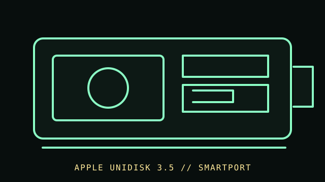

[ FLOPPY DRIVES // IDENTIFIED MODEL ]
Apple UniDisk 3.5 External Drive
Apple UniDisk 3.5 is an external 3.5-inch disk drive for compatible Apple II systems. It uses Apple-specific host/controller signaling and should not be mistaken for a standard PC floppy drive.

MODEL IDENTIFICATION: Apple UniDisk 3.5; verify the nameplate, host/controller, cable, and the owner/service-manual edition for the exact unit. Confirm the full designation, revision, interface and service-document edition. This record is not a general compatibility guarantee.
Recorded specifications
| Catalog model | Apple UniDisk 3.5 External Drive |
|---|---|
| Device type | External 3.5-inch drive with Apple-specific electronics |
| Interface / connector | Apple UniDisk/SmartPort-compatible connection; host support depends on Apple II model and, where required, the appropriate controller/interface card. |
| Media / formats | 3.5-inch magnetic disks formatted for supported Apple II systems/software. Do not infer DOS/FAT compatibility from physical media size. |
| Revision caution | Verify model suffix, label, board/firmware revision, cable and manual edition. Model-family similarity is not proof of pinout, BIOS support, interchangeability or format compatibility. |
Host and controller compatibility
- Use only with Apple II hosts and controller configurations documented for UniDisk 3.5; support differs among Apple II models and configurations.
- Confirm the host, controller card, cable, and software requirements in the owner manual before connection. The enclosure connector is not a PC floppy pinout.
- Disk-image support is software- and format-dependent. Preserve the original acquisition and document any conversion separately.
Safe preservation and cleaning
Power down the host and disconnect the drive before inspection. Do not insert damaged or contaminated media. Follow Apple’s model-specific maintenance documentation; do not touch head surfaces, use unapproved chemicals, or adjust alignment without a service reference.
Photograph labels and connectors before service. Record the host, controller, settings, software, condition and source document. Keep original media or raw captures intact; verify checksums before making derivatives.
Manufacturer manuals & archival references
- Apple II UniDisk 3.5 Owner’s Manual (1984) — Internet ArchiveDigitized Apple owner documentation for identification and host use.
- Apple II UniDisk 3.5 Owner’s Manual — Apple Disk Docs archiveAlternate scan/archive entry for the UniDisk 3.5 manual.
- Library of Congress — Digital format sustainabilityPreservation planning and file-format documentation.
Archived manuals may apply to a particular revision or family. The complete model/revision-specific manufacturer manual takes precedence. Capacities and recording modes are omitted where they cannot be tied to the cited model and format.